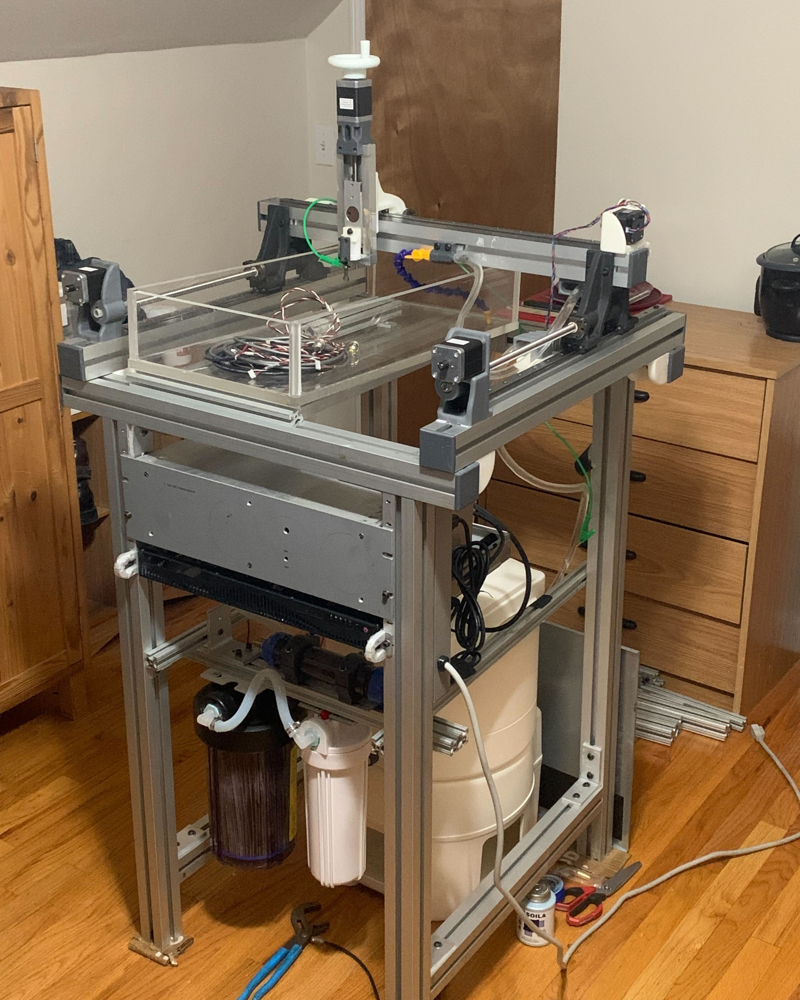
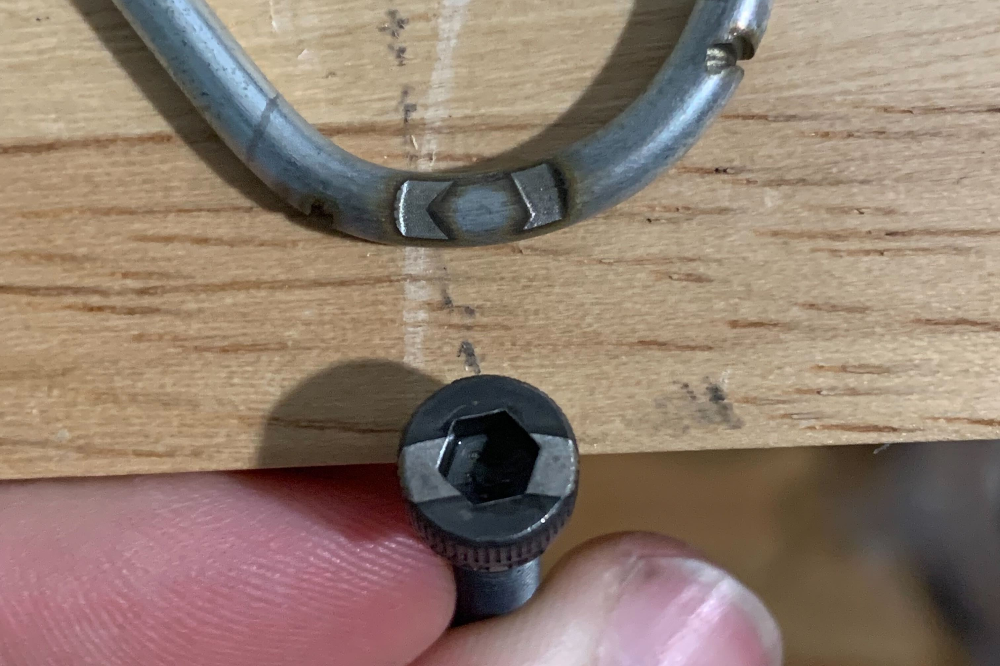

EDM Machinine
Cutting steel with millions of tiny sparks

I tried to build my own Wire EDM machine, because I thought it was an interesting capability that I didn't currently have in the home shop. I built it in my Boston apartment while working up there. I started by building a ram-EDM machine, to get the basics all worked out, but ultimately abandoned the project before I started doing the actual wire portion of the project. I had built some basic fluid-handling and deionization, some basic motion controls, a homebrew arc-generator circuit that was getting me very mild but controlable ~40kHz arcs, and even stable closed-loop operation in most conditions.
The reason I abandoned the project was simply that I realized you can buy full-size industrial wire EDM machines (albeit pretty old ones) for under $500. There was simply no way building my own could ever be cost effective compared to that. At minimum I could buy one of those machines and then redo the electronics myself, and have a machine base and kinematics massively better than what I'd have built.

One of the early tests of the system using a socket-head screw as the electrode. It dutifully cut a perfect negative of that shape into this steel hook.